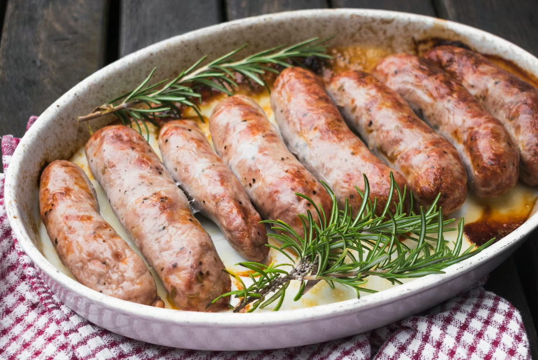
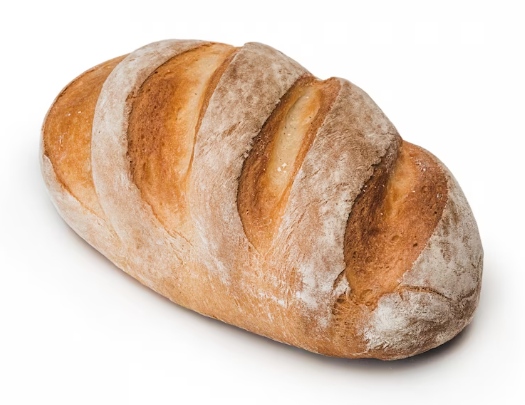

Wielkanoc
to najstarsze chrześcijańskie święto. Obchodzone w niedzielę
po pierwszej wiosennej pełni Księżyca (zazwyczaj wypada ona między 22
marca, a 25 kwietnia).
Dla katolików Wielka Niedziela jest świętem najważniejszym. Upamiętnia
Dzień Zmartwychwstania Pańskiego.
Potrawy Wielkanocne
- Żurek wielkanocny z chrzanem na zakwasie
- Wędzonki
- Jajka faszerowane
- Sałatka warzywna
- Mazurek
- Baba wielkanocna
- Pieczona biała kiełbaska

- Pasztet wielkanocny
- Schab ze śliwką
Symbole Wielkanocne
- Baranek wielkanocny z ciasta, masła lub cukru. Baranek to bardzo to ważny symbol
Wielkanocy. Symbolizuje on samego Jezusa Chrystusa, jego łagodność i
posłuszeństwo. Przedstawiany w towarzystwie czerwonej chorągiewki z krzyżem
przypomina o zmartwychwstaniu Chrystusa, który pokonał grzech. Umieszczany w
koszyczku ze święconką i stawiany na wielkanocnym stole. Może być wykonany z
ceramiki, ale również z biszkoptowego ciasta, masła lub masy cukrowej.
- Chleb we wszystkich kulturach ludzkości był i jest pokarmem podstawowym, niezbędnym do życia. Wśród chrześcijan zawsze był symbolem nad symbolami - przedstawia bowiem Ciało Chrystusa. Dlatego sporządzano specjalnie wypieczony wielkanocny chlebek, zwany „paschą”.

- Sól to minerał życiodajny, dawniej posiadający moc odstraszania wszelkiego zła. Bez soli nie ma życia. To także oczyszczenie, samo sedno istnienia i prawdy. Stąd twierdzenie o „soli ziemi” - jak to w Kazaniu na Górze powiedział Chrystus o swoich uczniach.
- Wędlina zapewnia zdrowie i płodność, a także dostatek, bo przecież nie każdy mógł sobie pozwolić na ten szczególny pokarm. Kiedyś był to choćby plaster szyneczki, a od XIX w. słynna polska kiełbasa.
- Ser jest symbolem zawartej przyjaźni między człowiekiem a siłami przyrody, a przede wszystkim stanowi gwarancję rozwoju stada zwierząt domowych. Ser jest bowiem produktem mlecznym pochodzącym od krów, owiec i kóz.
- Chrzan zawsze był starym ludowym znamieniem wszelkiej siły i fizycznej krzepy. Współdziałając z innymi potrawami, zapewniał ich skuteczność.
- Ciasto do koszyka ze święconką dodano najpóźniej, jako symbol umiejętności i doskonałości - zapewne głównie jako popis domowych gospodyń. Ciasto reprezentowane było głównie przez wielkanocne baby. Warto zaznaczyć, że w koszyczku powinien znaleźć się wypiek własny, domowy, a nie kupiony w ciastkarni.
Jajko
jest dowodem odradzającego się życia, symbolem zwycięstwa nad śmiercią. Do święcenia przygotowywano specjalnie malowane jajka, nazwane w zależności od techniki zdobienia:
- kraszanki
- pisanki
- skrobanki
- nalepianki
- wyklejanki
Obraz autorstwa Freepik
Obraz autorstwa Racool_studio na Freepik
Obraz autorstwa Racool_studio na Freepik
Obraz autorstwa master1305 na Freepik
Obraz autorstwa KamranAydinov na Freepik
Obraz autorstwa pvproductions na Freepik
Obraz autorstwa our-team na Freepik